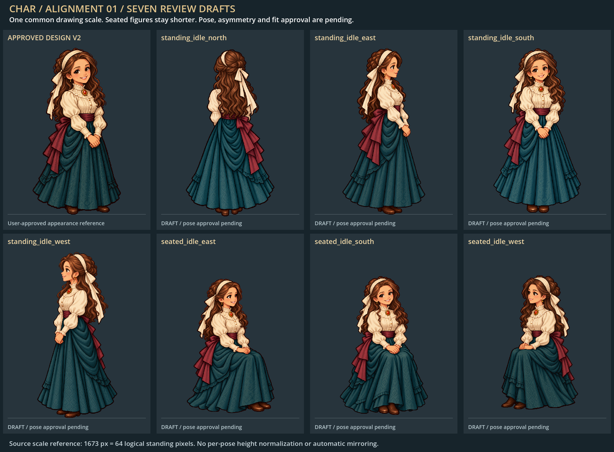
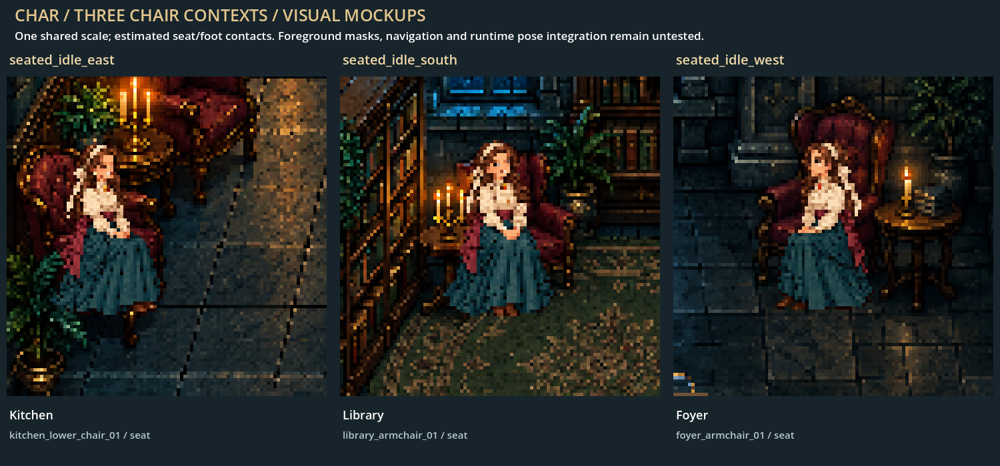
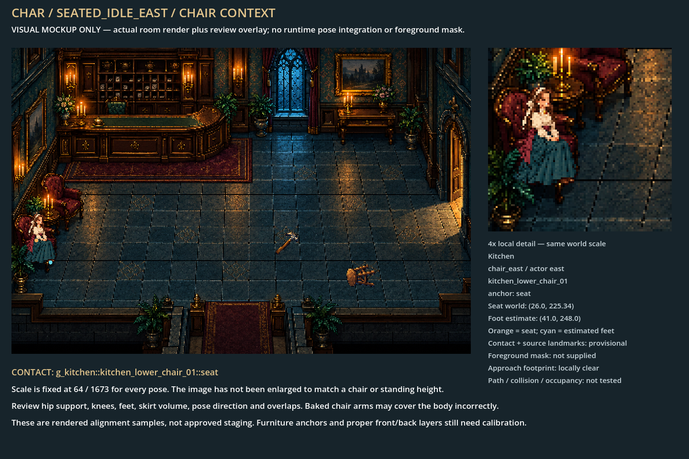
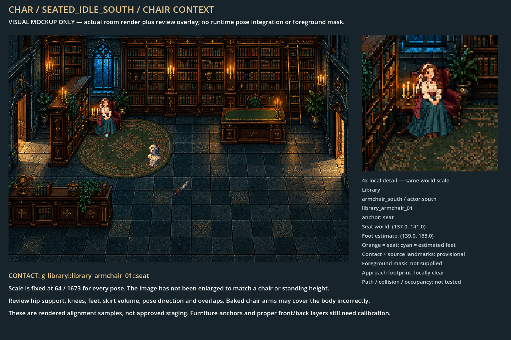
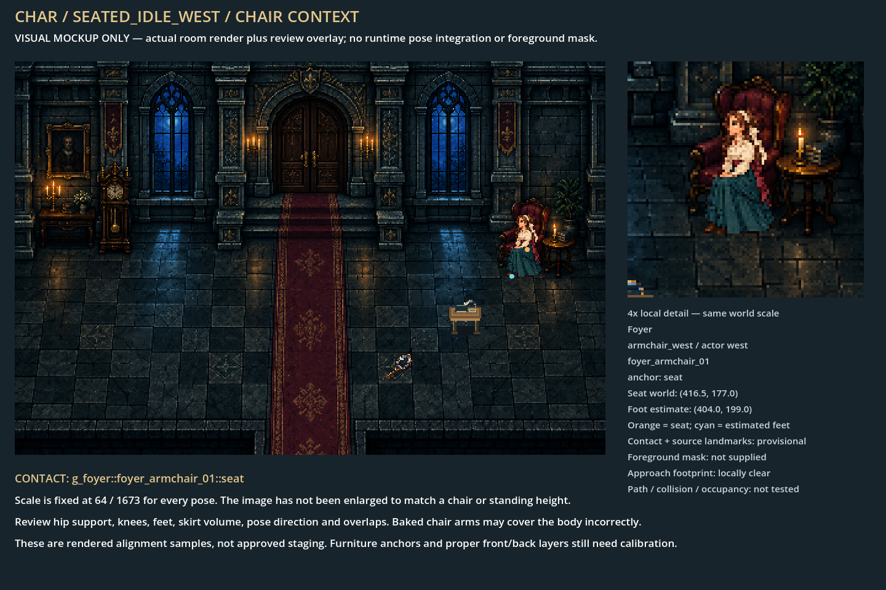

standing_idle_north

Artwork samples approved. Shared scale, native transparent masters and padded draft exports. Room composites are visual mockups: masks, navigation, fit and runtime integration remain untested.






